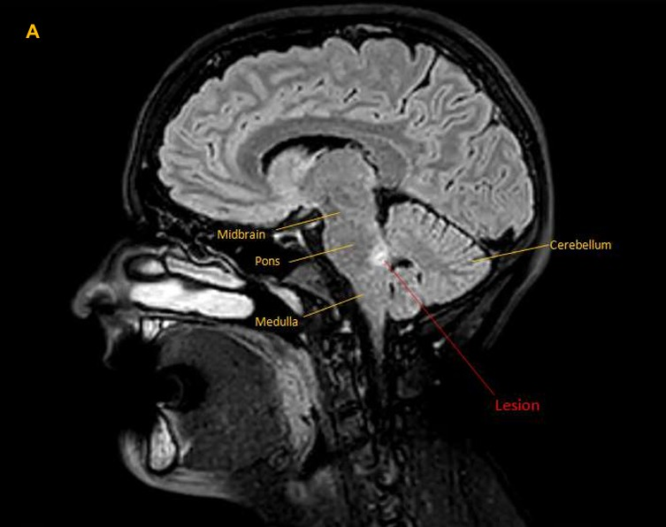
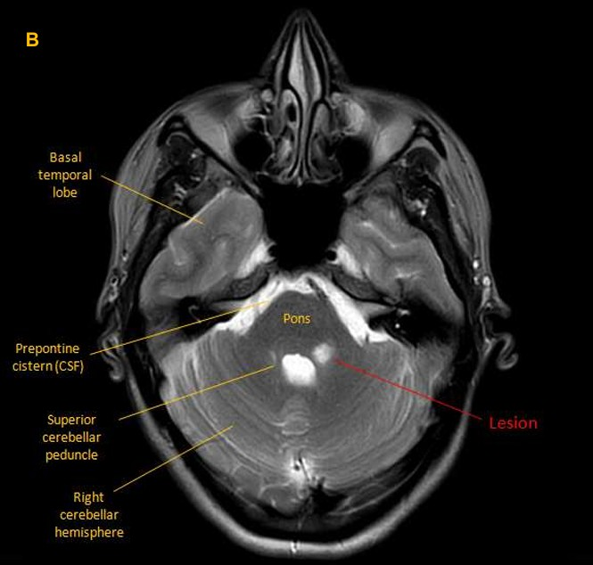
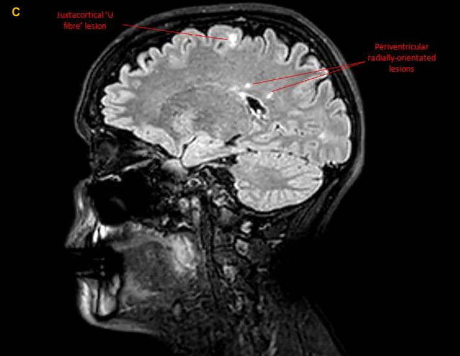
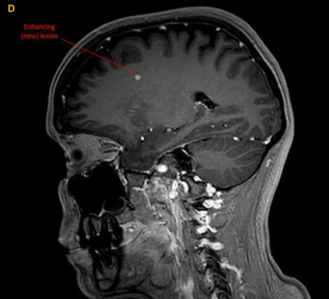

Case 3. Numb face
Case
An MRI showed a left pontine lesion suggestive of demyelination (images A & B), in addition to multiple white matter lesions in the brain, including a juxtacortical ‘U fibre’ lesion (image C), periventricular lesions, and cerebellar lesions.
  This was suggestive of multiple sclerosis (MS), meeting the criteria for dissemination in space . However, insufficient evidence was present to meet the dissemination in time criteria, so the patient underwent another MRI with contrast 3 weeks later. By this time, the pontine lesion was non enhancing, while there were new, asymptomatic, enhancing lesions present (image D) - demonstrating dissemination in time . MS was diagnosed.
The patient was treated with B-cell depleting infusions, which were tolerated well, with a stable clinical course and no relapses, as well as stable imaging performed annually. The facial sensory loss gradually returned to normal, with only occasional intermittent cheek tingling and numb feelings.
Two years after diagnosis, she paused her infusions for family planning and had an uncomplicated pregnancy, delivering a healthy baby.
Final diagnosisHemifacial numbness due to a demyelinating pontine lesion as the first presentation of MS.
Key pointsReturn to Cases